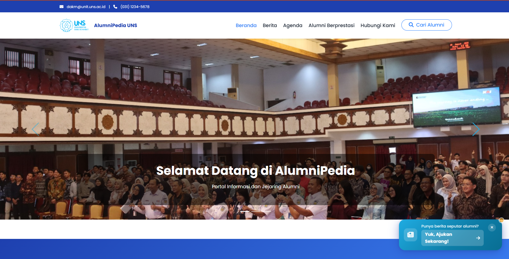

alumnipedia.jpgAlumnipedia
An alumni information portal built within the DAKM ecosystem. The goal was to make alumni data and content easier to access without turning the system into something heavy or confusing. I handled the front end and UI work and helped with the Laravel back end.
view live ↗